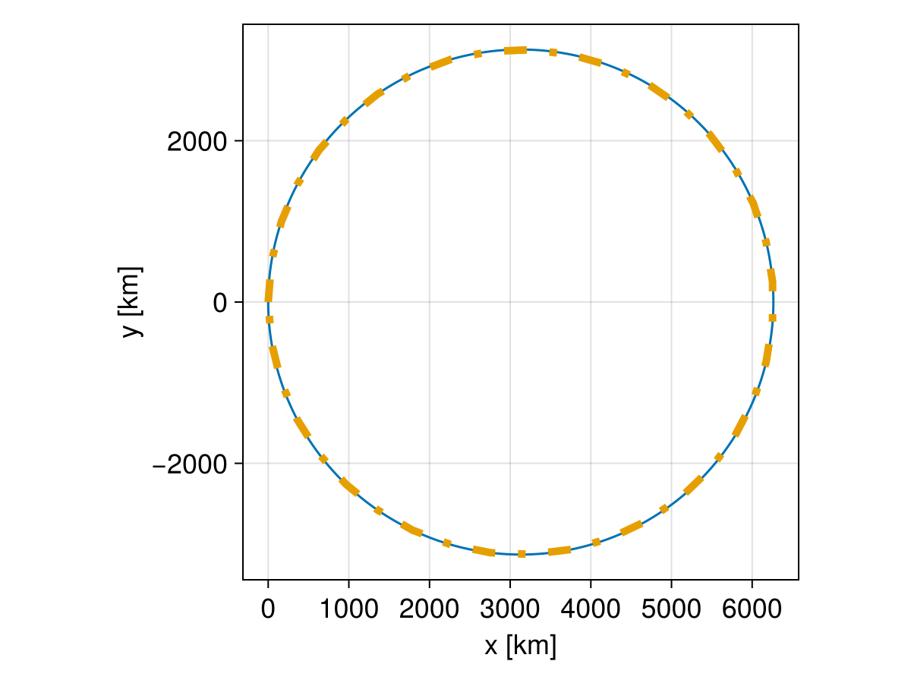

Dimensionless and Dimensional Tracing


This example shows how to trace charged particles in both dimensional and dimensionless units. We first solve the Lorentz equation in SI units, and then convert the quantities to normalized units and solve it again in dimensionless units.
The Lorentz equation in SI units is written as
\[\frac{\mathrm{d}\mathbf{v}}{\mathrm{d}t} = \frac{q}{m}\left( \mathbf{v}\times\mathbf{B} + \mathbf{E} \right)\]
It can be normalized to
\[\frac{\mathrm{d}\mathbf{v}^\prime}{\mathrm{d}t^\prime} = \mathbf{v}^\prime\times\mathbf{B}^\prime + \mathbf{E}^\prime\]
with the following transformation
\[\begin{aligned} \mathbf{v} &= \mathbf{v}^\prime V_0 \\ t &= t^\prime t_0 = t^\prime \Omega^{-1} = t^\prime \frac{m}{qB_0} \\ \mathbf{B} &= \mathbf{B}^\prime B_0 \\ \mathbf{E} &= \mathbf{E}^\prime E_0 = \mathbf{E}^\prime V_0 B_0 \end{aligned}\]
where all the coefficients with subscript 0 are expressed in SI units. All the variables with a prime are written in the dimensionless units.
using TestParticle, OrdinaryDiffEqVerner, StaticArrays
using TestParticle: c, qᵢ, mᵢ
using CairoMakie
# Unit conversion factors between SI and dimensionless units
const B₀ = 1e-8 # [T]
const U₀ = c # [m/s]
const E₀ = U₀*B₀ # [V/m]
const Ω = abs(qᵢ) * B₀ / mᵢ # [1/s]
const t₀ = 1 / Ω # [s]
const l₀ = U₀ * t₀ # [m]
# Electric field magnitude in SI units
const Emag = 1e-8 # [V/m]
### Solving in SI units
B(x) = SA[0, 0, B₀]
E(x) = SA[Emag, 0.0, 0.0]
# Initial conditions
x0 = [0.0, 0.0, 0.0] # [m]
v0 = [0.0, 0.01c, 0.0] # [m/s]
stateinit1 = [x0..., v0...]
tspan1 = (0, 2π*t₀) # [s]
param1 = prepare(E, B, species=Proton)
prob1 = ODEProblem(trace!, stateinit1, tspan1, param1)
sol1 = solve(prob1, Vern9(); reltol=1e-4, abstol=1e-6)
### Solving in dimensionless units
B_normalize(x) = SA[0, 0, B₀/B₀]
E_normalize(x) = SA[Emag/E₀, 0.0, 0.0]
# For full EM problems, the normalization of E and B should be done separately.
param2 = prepare(E_normalize, B_normalize; species=User)
# Scale initial conditions by the conversion factors
x0 ./= l₀
v0 ./= U₀
tspan2 = (0, 2π)
stateinit2 = [x0..., v0...]
prob2 = ODEProblem(trace_normalized!, stateinit2, tspan2, param2)
sol2 = solve(prob2, Vern9(); reltol=1e-4, abstol=1e-6)
### Visualization
f = Figure(fontsize=18)
ax = Axis(f[1, 1],
xlabel = "x [km]",
ylabel = "y [km]",
aspect = DataAspect(),
)
lines!(ax, sol1, idxs=(1, 2))
# Interpolate dimensionless solutions and map back to SI units
xp, yp = let trange = range(tspan2..., length=40)
sol2.(trange, idxs=1) .* l₀, sol2.(trange, idxs=2) .* l₀
end
lines!(ax, xp, yp, linestyle=:dashdot, linewidth=5, color=Makie.wong_colors()[2])
invL = inv(1e3)
scale!(ax.scene, invL, invL)

We see that the results are almost identical, with only floating point numerical errors. Tracing in dimensionless units usually allows larger timesteps, which leads to faster computation.
This page was generated using DemoCards.jl and Literate.jl.